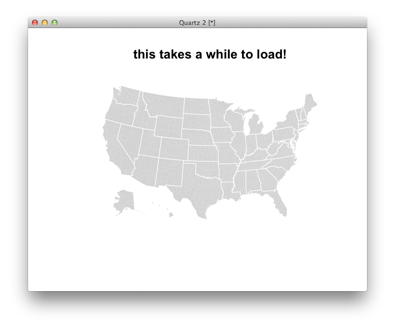

Now we know a lot of details about Chicago's guns, but seeing our data would help us a lot. In this tutorial, we'll make two common kinds of maps in R using the maptools package.
Before we start, we're going to need some R libraries that don't come with R. It's called maptools and we need it to make maps! We also need another package called RColorBrewer, which "provides palettes for drawing nice maps shaded according to a variable."
Here's what you need to type in your console to make sure you're ready to go: (If you're familiar with Ruby, this is a lot like loading in a RubyGem.)
# you might have this already -- you only need to do this once
install.packages("maptools")
install.packages("RColorBrewer")
# load the libraries for this session
library(maptools)
library(RColorBrewer)
Obviously, to make a map, we need some map files. What kind of geography would best suit our data? (For example, a world map, a state map, a county map, a ZIP code map...)
We're going to need a special kind of Geographic Information Systems (GIS) file called a shapefile.
Say we've collected all the shapefiels we're going to need and put them in a folder called "shapes." (You can download the ZIP file here. Make sure it's inside your data folder.)
Let's load and plot a U.S. state map:
states <- readShapePoly("data/shapes/nytlayout_state.shp")
plot(states)
plot(states,col='pink',border='white')
plot(states,col=rainbow(5))
title("Print it!")
plot(states,border='lightgrey')
points(coordinates(states),col="orange",cex=5) #cex determines the size of the circles
title("Points are on the shape centroids")
Pretty easy, but not particularly useful. Let's take a further look at our data. let's treat it like a data frame for a minute:
class(states)
names(states)
head(states)
How is our data like a data frame and how is it not?
The key to data mapping is to match the data being visualized to the geography it's associated with. R makes this easy for us. Saw, for example, we wanted to make a map that highlights only midwestern states. (You may recall we defined those earlier as midwest.states.) What we need is a vector of colors that matches our vector of states, states$STATE_NAME.
is.midwest <- states$STATE_NAME%in%midwest.states
That's close, but we need a vector of colors, not a vector of Boolean values. But the logic is the same:
is.midwest <- states$STATE_NAME%in%midwest.states
is.midwest.col <- ifelse(is.midwest,"gold","white")
plot(states,border="lightgrey",col=is.midwest.col)
title("Where the nice people live")
# you could of course do this in a single step once you're good,
# but it makes your code much harder to read
plot(states,border="lightgrey",col=ifelse(states$STATE_NAME%in%midwest.states,"gold","white"))
Our goal, though, is to make maps about Chicago, and the Chicago data isn't in the shapefile data. Since we've been practicing a U.S. state map, let's make one of those first. To do that, we'll need data on the state level. You might have this handy already, but if you don't, we can make our own using aggregate.
state.gun.data <- aggregate(data$count3,list(data$st),sum)
# why use st rather than STATE, by the way?
# also, is there a better field we might want to match on?
# rename for sanity
names(state.gun.data) <- c("st","guns")
Now we're ready to map them. To be clear, we have two data sets: the data from our map, which has state names, state abbreviations, FIPS codes and the like, and our aggregated guns data, which has state abbreviations and totals for guns per state. Let's make sure the state abbreviaitons in our map data are the same as our state abbreviations in our guns data:
states$STATE_ABBR%in%state.gun.data$st
# If you see a vector of "TRUE" values, you should be in good shape.
# what does this vector mean?
Our goal is to make a new data frame that has the same geography data as the shapefile and the data from our state table matched properly. We can do this a lot of ways, and tastes do vary, but here's one way:
# this looks odd, but it's the answer to the question,
# "Where in vector of state abbreviations in my gun data is the same
# abbreviation in my map data? "
match(states$STATE_ABBR,state.gun.data$st)
# let's call that something
match.order <- match(states$STATE_ABBR,state.gun.data$st)
# let's discuss that a minute and compare these two vectors
state.gun.data$guns
state.gun.data$guns[match.order]
# make a vector of the guns data IN THE SAME ORDER as the map data
guns.for.map <- state.gun.data$guns[match.order]
# make a simple bubble map:
# (note that the "5000" is absolutely random depending on your plot size)
plot(states,border="lightgrey")
points(coordinates(states), cex= sqrt(guns.for.map / 1200), col='red')
title("Guns by state")
This looks right and matches what we had learned from the previous lesson – that most of the guns were in Chicago. But it looks like our map isn't very interesting. Let's try making a choropleth map to see if that makes a difference. To do that, we'll need to break up our data into threshold "buckets" that match to a set of colors. But let's not guess at what our break values are. Instead, examine a histogram of our data:
hist(guns.for.map,breaks=5)
This confirms what we already know, which is that our distribution is boring (there are a lot of guns in Illinois and a couple other states, and the others have almost none), but let's make the map anyway. Let's set 5 breaks for our map and assign them to a group of colors.
gun.breaks <- c(0,5000,10000,20000,25000)
# makes a 4-step vector of colors from yellow to red
# type display.brewer.all() for more
colors <- brewer.pal(4,"YlOrRd")
#type and discuss
cut(guns.for.map,breaks=gun.breaks)
#if that scares you, try thids
as.numeric(cut(guns.for.map,breaks=gun.breaks) )
gun.bucket <- as.numeric(cut(guns.for.map,breaks=gun.breaks) )
#does this make sense?
colors[gun.bucket]
plot(states,col=colors[gun.bucket])
title("Choropleth: guns by state")
You've made a successful choropleth map. Unfortunately, it's boring. The good news is we have data at a closer geography, and we have a shapefile of counties too.
counties <- readShapePoly("data/shapes/nyt_county.shp")
state_lines <- readShapeLines("data/shapes/nyt_state_lines.shp")
plot(counties,col="lightgrey",border=F)
plot(state_lines,col="white",add=T)
title("this takes a while to load!")

Your goal is to recreate the bubble maps and choropleth maps for the U.S. at a county level with the county-level data. Work in groups and if you're stuck, ask a neighbor. I'll come around and help as well. The steps will be nearly identical to what you did with the state map.
There is one small formatting thing we'll need to fix, though, and that's our FIPS field in our data. Currently it's 4 digits instead of 5 because the leading zero is stripped off (which sometimes happens with Excel, or if you're working in TopoJSON, it's the preferred format, for some reason.) So let's make a field in our data called cleanfips:
#sprintf does string formatting and feels magic
data$cleanfips <- sprintf("%05d",data$FIPS)
head(data)
Now you should be set! Remember, here's the general order for bubble maps
points(coordinates(counties),cex=YOUR.DATA) If you do it right, you'll get this.
county.match.order <- match(counties$FIPS,data$cleanfips)
county.guns.for.map <- data$count3[county.match.order]
pdf(file="moo.pdf")
plot(counties,border="lightgrey")
points(coordinates(counties), cex= sqrt(county.guns.for.map/ 300), col='red')
title("Guns by county")
dev.off()
Remmeber the same rules for the choropleth map.
col=YOURCOLORVECTOR[YOURDATABUCKET] If you do it right, you'll get this.
county.breaks <- c(-Inf,10,50,100,1000,Inf)
county.colors <- c(brewer.pal(5,"YlOrRd"))
county.bucket <- as.numeric(cut(county.guns.for.map,breaks=county.breaks) )
ccol <- county.colors[county.bucket]
plot(counties,col=ccol)
title("Good")
county.breaks <- c(-Inf,10,50,100,1000,Inf)
county.colors <- c("white",brewer.pal(4,"YlOrRd"))
county.bucket <- as.numeric(cut(county.guns.for.map,breaks=county.breaks) )
ccol <- county.colors[county.bucket]
plot(counties,col=ccol,border=F)
plot(state_lines,add=T,col='lightgrey')
title("Better")
Make two-tone map of the U.S., coloring a county white if there were no Chicago guns traced to it, red if it had one or more.
Here's just one of the maps that ended up in print. (it should be easy to make, more or less, in R from what you already have.)
Next up: Lesson 5: Exploratory charting